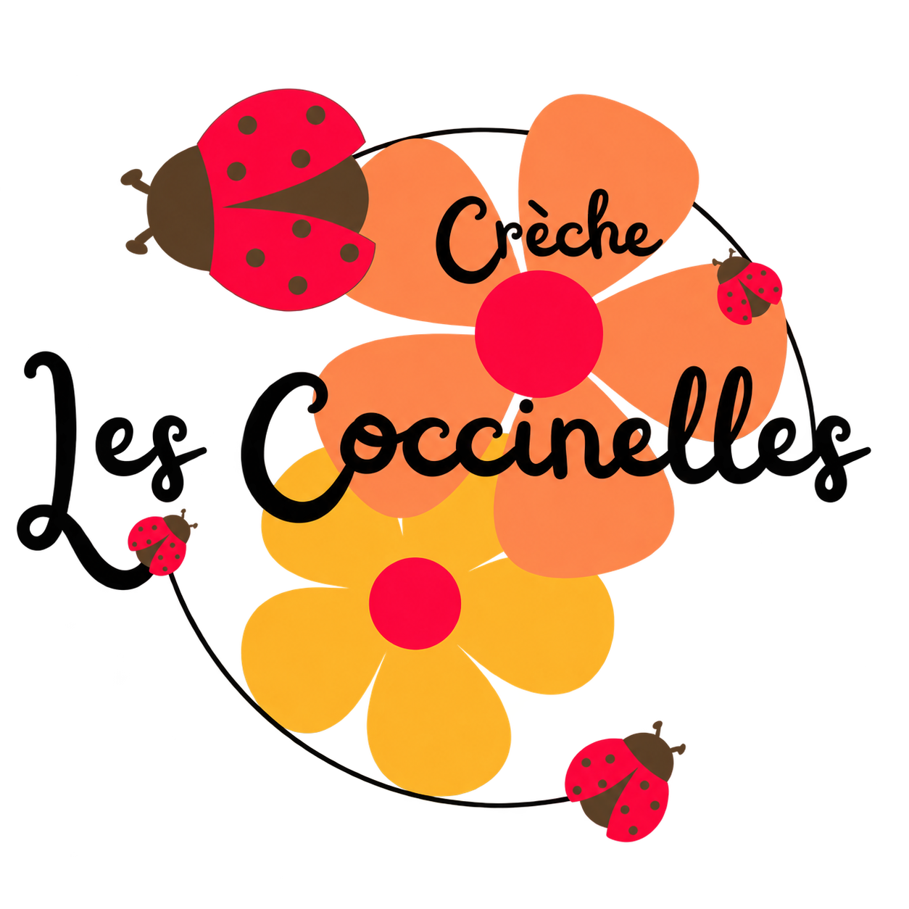

CRÈCHE LES COCCINELLES
Puilboreau · Accueil de la petite enfance

Démarches et documents
Le parcours de préinscription, les justificatifs nécessaires et la période d’adaptation à la Crèche Les Coccinelles.
Les enfants accueillis doivent habiter prioritairement les communes de Puilboreau, Saint-Xandre ou Esnandes. La préinscription concerne l’accueil régulier ou occasionnel et ne constitue pas, à elle seule, une réservation définitive.
Accueil inclusif. La crèche accueille également les demandes concernant les enfants en situation de handicap. Un projet spécifique peut être élaboré avec la famille, la direction, l’équipe éducative et les partenaires concernés. Les conditions d’inscription sont identiques.
Télécharger la fiche de préinscription
Utiliser la « Fiche unique de renseignements » commune au Relais Petite Enfance Picoti Picota et à la Crèche Les Coccinelles. Le formulaire original figure en annexe.
Remplir et signer le formulaire
Indiquer les renseignements sur l’enfant et ses parents, les besoins d’accueil (jours, horaires, date souhaitée), les choix de mode de garde, les autorisations de données et les signatures.
Envoyer la fiche complétée
Adresser le document à la crèche et au Relais Petite Enfance :
Crèche : les.coccinelles17@orange.fr
RPE Picoti Picota : rpe@ville-puilboreau.fr
Compléter le dossier d’admission
Lorsque la demande peut aboutir, réunir les pièces justificatives et signer les formulaires et protocoles demandés.
Finaliser la place
La place est réservée après la signature du contrat et l’inscription sur le site « Pirouette ». Respecter la date d’entrée prévue.
Préparer l’accueil progressif
Organiser la période d’adaptation avec l’équipe en fonction des habitudes et des besoins de l’enfant.
IMPORTANT - ENVOI OBLIGATOIRE AUX DEUX DESTINATAIRES
La fiche de préinscription complétée et signée doit être envoyée aux deux adresses e-mail suivantes :
CRÈCHE LES COCCINELLES
Puilboreau · Accueil de la petite enfance
Documents et informations
Les pièces nécessaires à l’admission définitive, puis les informations pratiques pour les familles.
Dans l’intérêt de l’enfant, il est prévu une période dite « d’adaptation » en vue de l’entrée effective. Elle est nécessaire pour établir une relation de confiance entre l’enfant, la famille et l’équipe. Elle permet de connaître les habitudes de vie de l’enfant.
La période d’adaptation s’effectue sur environ 15 jours en fonction du besoin de chaque enfant.
Le dossier doit être complet pour un accueil régulier ou occasionnel. Selon les conditions prévues par la structure, les jours d’absence peuvent être facturés comme si l’enfant était présent.
| Crèche Les Coccinelles | Relais Petite Enfance Picoti Picota |
|---|---|
| 10 rue Saint-Vincent 17138 Puilboreau les.coccinelles17@orange.fr |
10 rue Saint-Vincent 17138 Puilboreau 06 25 62 86 22 rpe@ville-puilboreau.fr |
Annexe : fiche unique de renseignements originale à compléter et à transmettre aux destinataires indiqués.